Valorant takes the best from similar games in the genre. Pairing ability based heroes with a vault of weaponry enables the game to play in a hypercompetitive fashion. This 5 versus 5 multiplayer shooter is closest to Counter-Strike: Source in terms of gameplay with the added bonus of characters with unique abilities.
There are two sides in the game – Attackers and Defenders. The Attackers’ job is to push a site where their objective is to plant the “Spike”. Like other “search and destroy” style shooters, if the Spike detonates, the attackers win the round. Their opponents – the Defenders – must stop the enemy team from planting the Spike at all costs.

To win a round, teams must either wipe out their opponents, plant/defuse the spike or a combination of both. A team achieves victory after winning 13 rounds before the opposing team.

Players start off with 800 credits in the initial round dubbed the “pistol round” as an introduction to the match. These initial rounds only happen twice per match, once every 13 rounds when sides switch. Over the course of the match, players will earn credits depending on their performance such as kills, plants/defuses and round wins/losses.
Rounds come to an end depending on certain objectives that each team has. Attackers can only win in two ways, either by planting and detonating the Spike or by eliminating the entire defending team. On the flip side, Defenders can win in one of three ways instead. Like the Attackers, they can win by wiping out the entire enemy team or defusing the Spike after it has been planted. The third method of victory can be achieved by running out the round timer of 100 seconds.
If you're coming to Valorant from any other shooter, you'll easily recognize the different types of weapons as well as how much power they’ll have in comparison to other categories of guns. Valorant has divided their guns into 6 types: sidearms, submachine guns, assault rifles, sniper rifles, heavy machine guns and shotguns.
Classic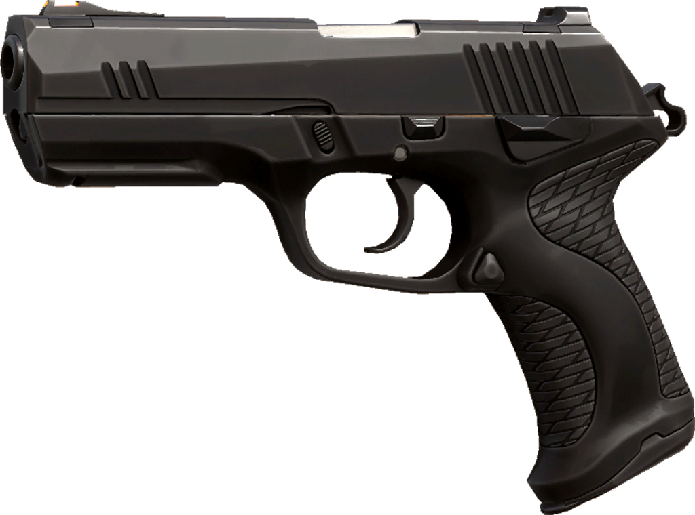SidearmsPrimary fire lands precise shots when still, and is equipped with an alternate burst-firing mode for close encounters. |
Shorty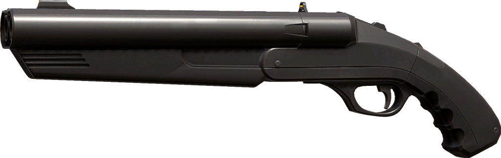SidearmsA nimble, short barrel shotgun that is deadly at close range but can only fire twice before needing to reload. Pairs well with long range weapons. |
Frenzy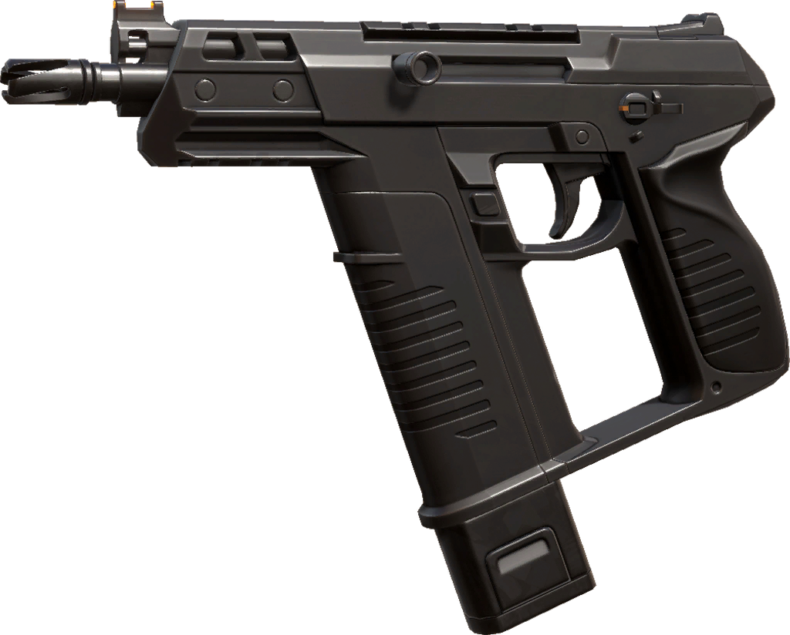SidearmsLightweight machine pistol that excels at firing on the move. Its high rate-of-fire can be difficult to control, so try short bursts at medium ranges. |
Ghost
SidearmsThe Ghost is accurate and carries a large magazine if you miss. Distant targets require a controlled fire rate. Quickly tap the trigger when you can see the whites of their eyes. |
Sheriff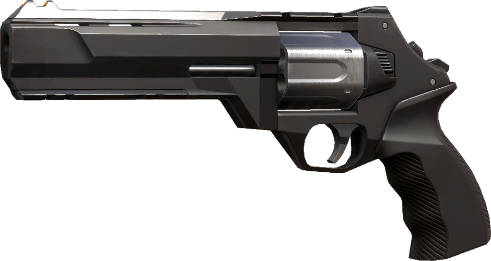SidearmsIts high-impact rounds pack a ton of recoil and require true grit to master. |
Stinger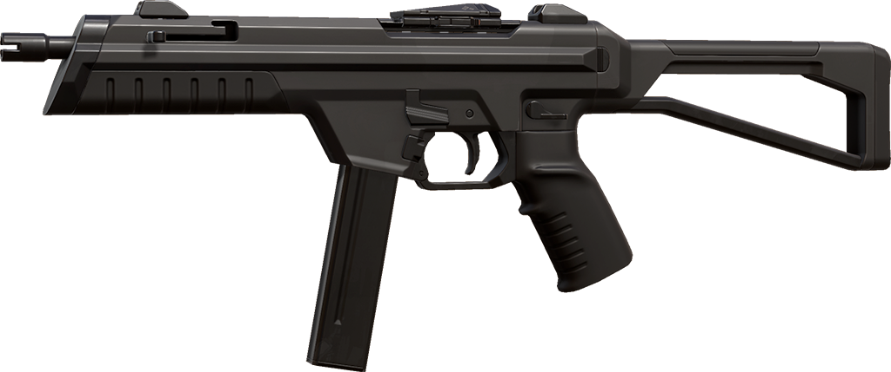SMGThis SMG is more potent at medium to long range than its counterparts, but at the cost of firing rate and mobility. The 20-round mag gets wasted in recoil-filled sprays, but lands lethal blows at medium distances with ADS and controlled fire. |
Spectre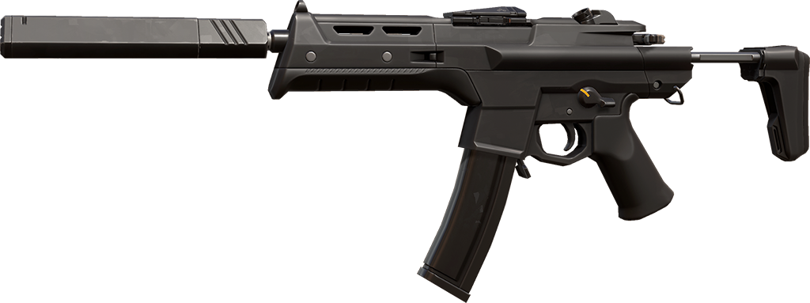SMGA jack-of-all-trades weapon with a great balance of damage, fire rate, and accuracy at both short and mid range. It haunts the corners of every map and requires only steady aim to drop foes at long distance. |
Bucky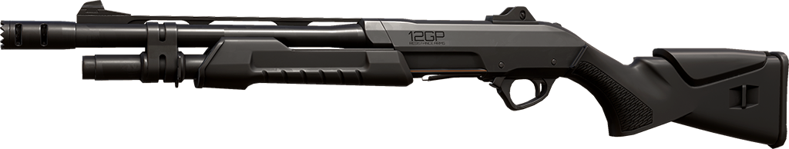ShotgunHeavy but stable, Bucky's primary fire is for holding tight corners or charging close quarters. Alternate fire strikes targets at medium range. |
Judge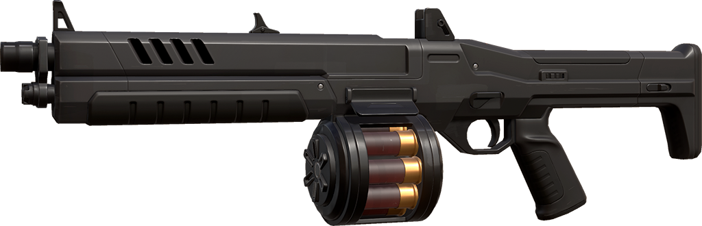ShotgunThe Judge is stable at the stand but volatile when fired rapidly. Primary fire hammers short range targets and you'll need to be steady to nail anything beyond an arm's-length. |
Bulldog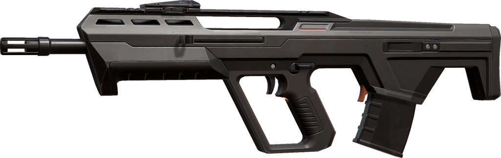RifleA surefire beast when you can pick your shots. Alt. fire lets you ADS and spew accurate, short bursts at anyone who tries you from medium to long-range. |
Guardian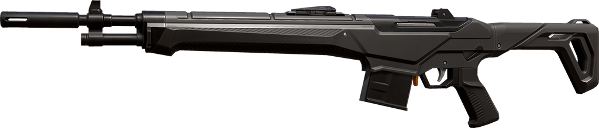RifleThe designated marksman rifle. Heavier and less mobile relative to other rifles but precise and powerful. Headhunt when enemies appear at medium to long distances. |
Phantom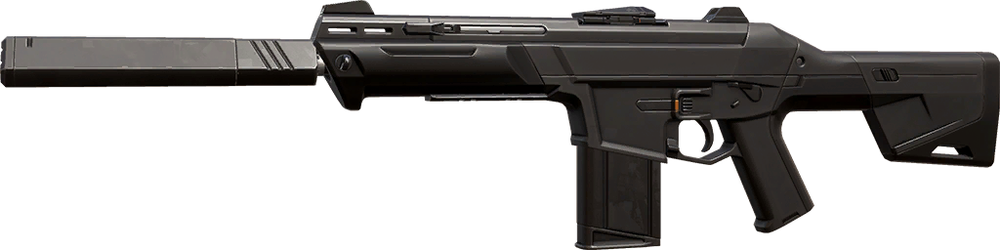RifleGo full auto for anyone who tests you up close and short controlled bursts scramble enemies from anywhere. Best when fired while stationary. |
Vandal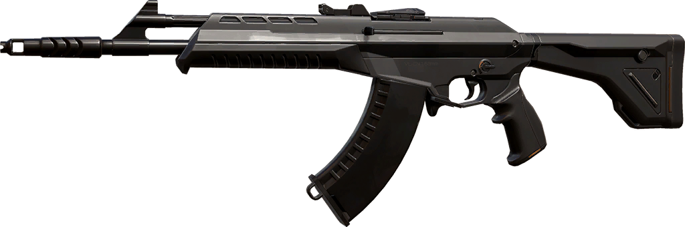RifleExtended fire results in less stability. The Vandal retains high damage over distance. Rewards those who focus single shots at a target's head. |
Marshal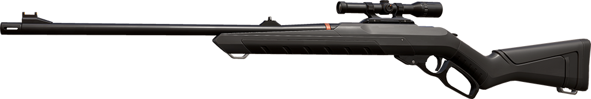SniperA nimble lever-action sniper rifle with a single zoom that can keep bullish enemies at bay. A slow rate of fire means you have to either hit the mark or leave yourself open to attacks. |
Operator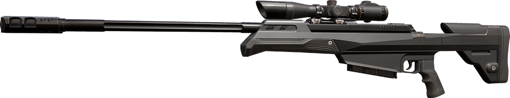SniperA fierce bolt-action sniper rifle with high-powered dual zoom. Extremely immobile but fires an incredibly powerful round that can devastate a team with one shot. |
Ares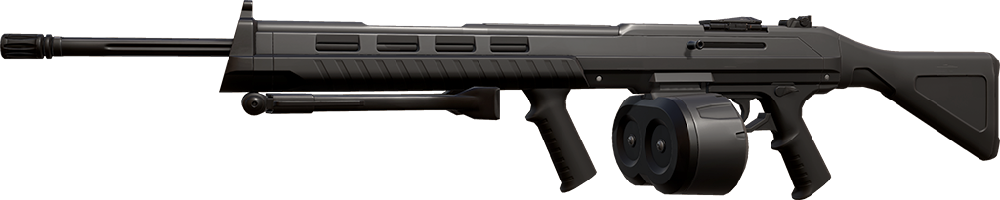HeavyThe Ares' large magazine means it excels at suppressive fire or dealing heavy damage to clustered groups. |
Odin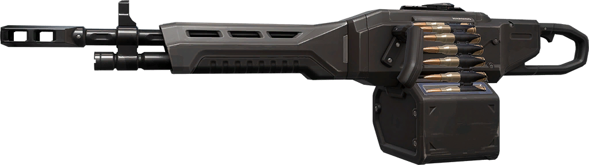HeavySuppressive, high damage fire with surprising stability. Spray enemies at short range and use alt. fire to make yourself a living turret. |
Tactical Knife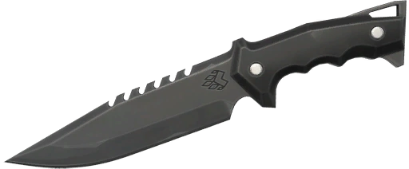MeleeWhen in doubt or out of bullets, hit them with this. Lets you run fast, destroy objects faster, or one-shot enemies in the back with alt. Fire. |
Learning the economy is fundamental to understanding VALORANT. It’s the bread and butter of the tactical shooter, attributing to each and every round. It can often be the difference between winning and losing.
Each kill in Valorant is worth 200 Creds, and planting the spike is worth an additional 300 Creds. If your team falls into a losing streak, there is some additional money allocated for each round you consecutively
Click here to watch a complete Guide on Valorant Economy
Valorant is a 5v5 Game, so everyone is expected to play the game as a team and with a plan in mind, of course the plan will go along depending on the map, so whichever map you get matched up. Be expected to also fight againts opponents that also play tactically as at the end of the day, whoever has the better strats will win the game.

There are 4 Roles in Valorant being Duelist, Initiator, Sentinel, and Controller. it is important to at least have each of one role in every game, but there is a five players and four roles, so it is the defining strategy and team composition to have the fifth slot to be filled, be carefull as some team composition are easily countered by the enemy composition.